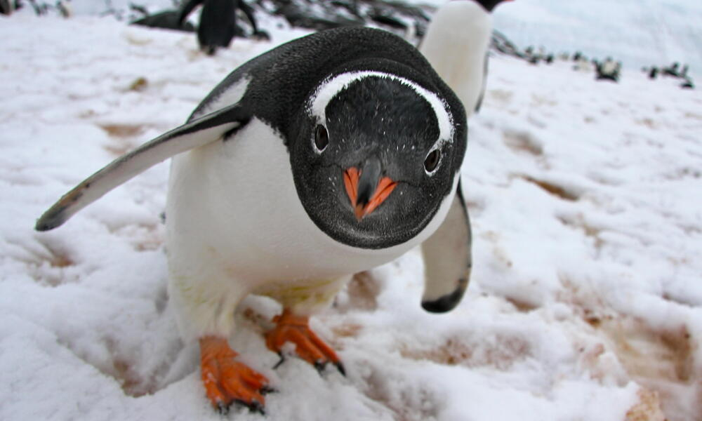

def select_features(df, target_column, n) :
#returns n most predictive features for target_column
x = df.drop(target_column, axis = 1)
y = df[target_column]
[x_train, x_test, y_train, y_test] = train_test_split(x, y, test_size = 0.2, random_state = 42)
LR = LinearRegression()
rfe = RFE(estimator = LR, n_features_to_select = n)
rfe.fit(x_train, y_train)
return x.columns[rfe.support_]
Abstract
We intestigate the Palmer Penguin data set. We investigate quantitative and qualitative features that partion the set by species. We confirm our results with an automated feature selection process, and test four different model accuracy and speed (Decision Trees, Random Forrests, K-Nearest Neighbors, Logistic Regression).
Classifying the Palmer Penguins
Today we are going to classify some penguins. According to BirdLife international, penguins are one of the most threatened groups of seabirds, with half of the 18 species list as either vulnerable or endagered. This means that classification can be an import aspect in assessing populating dynammics.
Exploring the Dataset
We’ll first start by exploring the data set. I am most curious how different features partition the penguins by species. This will lend some context later on when we train our model.
Above are box and wisker plots for penguin body mass and flipper length subdevided by species. Interesting, both Chinstrap and Adelie Penguins have similar distriubtions of these features. However, weight and flipper length clearly distinguishes Gentoo penguins from their counterparts. Moreover, flipper length appears to have a tighter spread accross Gentoo and Adelie penguins. Speaking of penguins, here’s the squad:

As a certified penguin enjoyer, I also couldn’t help but notice that these penguins appear to have different types of beaks. The two features that correspond to this information are Culmen Length and Culmen depth. If we expect the beaks to be a distingishing feature, we might expect some seperation in the data set when we plot the two against eachother.
Wow! We are able to clearly distinguish each species of penguin by the ratio of their culmen length to culmen depth. This might suggest that among these three penguins within this region, beaks have adapted to suit each individuals speice’s unique needs like hunting, preening, and defense.
I’m also curious about the species demographics accross the three islands.
Interestingly, Adelie penguins live on all three islands, and are the only species residing on Torgersen island. Dream Island also contains Chinstrap Penguins, and Biscoe Island contains the entire Gentoo population.
Finally, we’ll take a look at a pairplot for select quantiative features to see if there is anything else that might be useful:
Along the main diagonal, we can see the distriubtion of the features themselves for the three different species populations. We see that each feature only seperates out certain species. For example Flipper Length has one distinct mound centered right, but the two other mounds are overlapping. Besides culmen length to culmen depth, two other noteworthy charts our culmen length to flipper length, and culmen length to body mass.
Feature Selection
The intial exploration of the data suggestions that if we are clever about feature selection, we should be able to select features the cut the dataset by penguin species. To confirm this, we will use recursive features selection (REF). REF works by assigning a predictive socre to each feature. In this case, we’ll use linear regression. It then eliminates low-scoring features. The process is repeated until the desired number of features is reached. We’ll define our REF function as follows:
To make things interesting, we’ll use two quantitative features and one qualitative feature. To do this, we’ll subdevide the dataset by quantitative features and qualitative features, and pass the augmented dataframe to our select features_features functions. In each case, we’ll look at the top 3 features:
#Defining Cuts
quantitativeFeatures = ["Species", "Culmen Length (mm)", "Culmen Depth (mm)", "Flipper Length (mm)", "Body Mass (g)", "Delta 15 N (o/oo)", "Delta 13 C (o/oo)"]
qualitativeFeatures = ["Species", "Island_Biscoe", "Island_Dream", "Island_Torgersen", "Stage_Adult, 1 Egg Stage", "Clutch Completion_No", "Clutch Completion_Yes", "Sex_FEMALE", "Sex_MALE"]
#Selecting Features
quantFeatures = utility.select_features(penguins[quantitativeFeatures], "Species", 3)
qualFeatures = utility.select_features(penguins[qualitativeFeatures], "Species", 3)The three best quantiative features are Culmen Length, Culmen Depth, and Delta 15 N. The three best qualitative features are Island_Biscoe, Island_Torgenrsen, and Clutch Completion. This confirms our suspicious in our initial analysis. For the quantitative features, we’ll take Culmen Length and Culmen Depth. In the intial data cleaning, I actually partitioned Island into three seperate columns, so we’ll just take Island as our single qualitative feature.
Model Training
Given the nature of this data set, there’s a high likelilhood we will be able to train a model with 100% accuracy. A better question to ask here is what types of models work well with the features that we choose. From our initial gander at the data, we saw that no single feature cleanly partitions the penguins by species. However, composite features like Culmen Length to Column depth appeared to have high predictive power. Regression might then be a good choice here; particulary, we’ll take a look at logistic regression.
Another important observation is that features can reduce the number of choices that the model has to make. For example, if a model is passed Torgersen Island, there is an 100% chance that it is looking at a Adelie penguin. Even if the model is passed Biscoe Island, it still narrows the number of choices down to two birds (Adelie and Gentoo). From here, other features can be used to classfy. This type of logic implicates decision trees and random forrests. We’ll test these as well.
We’ll define our predictive features and train the models as follows:
#Defining features
predictiveFeatures = ['Culmen Length (mm)', 'Culmen Depth (mm)', 'Island_Biscoe', 'Island_Dream', 'Island_Torgersen']
#Initializing Models
tree = DecisionTreeClassifier() #1
RF = RandomForestClassifier() #2
KN = KNeighborsClassifier() #3
LR = LogisticRegression(max_iter = 1000000) #4
models = [tree, RF, KN, LR]
modelNames = ["Decision Tree", "Random Forrest", "K - Nearest Neighbors", "Logistic Regress"]
a = []
i = 0
#Training and Testing
for model in models:
model.fit(penguins[predictiveFeatures], targetFeature)
pred = model.predict(testingPenguins[predictiveFeatures])
accuracy = accuracy_score(pred, testTargetFeature)
print(modelNames[i] + " Accuracy: " + str(accuracy))
i += 1The accuracies on the testing set are as follows: The Decision Tree scored 98.5%, the Random Forrest 100%, K - Nearest Neighbors 98.5%, and Logistic Regress 100%. We can investigate the decision process of our model by taking a look at the decision boundaries and confusion matrix:
The decision tree made one wrong classification, mistaking a Adelie penguin for a Gentoo. Examining the decision boundaries, we see that a majority of the penguins are easily partitioned into their respective species, with the exception for a few penguins which lie near the boundaries. Interesting, although Torgersen island only contained Gentoo penguins, the model seemed to expect that other species could live there.
The Random Forrest model correctly classified all the penguins. Unlike the Decision Tree Model, the Random Forrest was able to find that certain islands only contain certain species of penguins. Boundaries are also more linear, distinctlly partitioning islands into two decision regions.
The K-Nearest Neighbors Model mistook a Gentoo penguin for a Chinstrap penguin. Similar to the Decision Tree, the model assumed that all species of penguins may be present on each island. K-Nearest Neights also has “rough” decision boundaries, which likely reflects the mechanics of the model.
Logistic Regression was able to correctly classify all penguins. Out of all the models, Logistic Regression appears to have the cleanest decision boundaries, with no points close to boundary. Finally, it is worth remarking that K-Nearest Neighbors and Decision Tree were able to train and predict on the data the fastest. This was followed by Logistic Regression and then the Random Forrest. This means that Logistic Regression is the fastest, accurate model.
Discussion
Overall, our investigation suggests the a small number of features can produce high efficacy–If we are able to cleverly partition the data set. For toy data sets, automated methods such as recursive feature selection can aid in the feature selection process. Logistic Regression was the fastest, most accurate model. However, K-Nearest Neighbors and Decision Trees both produced a high degree of accuracy at about \(\frac{1}{6}^{th}\) the speed. This makes them good options for large data sets (think billions of penguins) where we are O.K. with sacrificing accuracy for a boost in computation complexity. Random Forrests–although by far the slowest method–correctly classified all the penguins. This suggets that in more complex data sets where multiple features may be regquired to accuriately classify, Random Forrests can be a robust classifcation method.